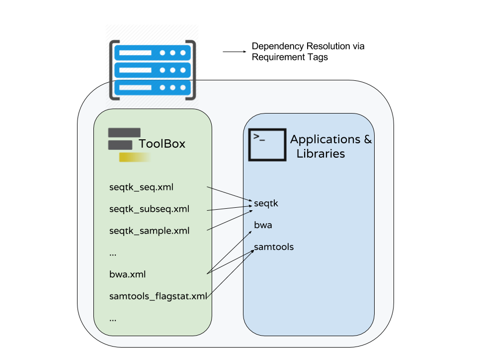

Tool Dependencies and Containers
Contributors
 John Chilton
John Chilton  Björn Grüning
Björn Grüning
Questions
What are the advantages of running my Galaxy tool inside of a container?
How does Galaxy find a container to run my tool in?
What are BioContainers and how are they related to Galaxy?
Objectives
Explore the differences between containerizing Galaxy and tool execution.
Discuss the advantages of containerizing tools.
Learn to build best practice tools ready to be containerized.
Requirements
-
Development in Galaxy
- Tool development and integration into Galaxy: slides slides - tutorial hands-on
Planemo
These slides mirror the section on “Dependencies and Docker” in the Planemo Documentation.
Generic Containers are Good Slide
.image-75[![A cartoon comparing containers vs VMs. On the left the VMs are presented as a layer of server, host os, and hypervisor (type 2) followed by several tall pillars of guest OS, bin/libs and finally their respective apps. Everything is siloed. On the right is containers where the layers are server, host os, and docker engine. Above those are very short pillars of each different app, and when duplicate apps are run, the bin/libs are shown as shared. Text reads: containers are isolated but share OS and where appropriate, bins/libraries.](../../images/containers.png) ]
]
- Isolation and Security*
- Reproducibility
- Flexibility*
.footnote[* the industry is getting there]
Speaker Notes
Galaxy in Containers?
.image-75[]
Speaker Notes
When people think Galaxy and containers I think this project comes to mind. Three years ago Björn created this docker-galaxy-stable project and it has been wildly successful. It has proven to be a useful toolkit for advanced deployment options, an extremely portable way to bring Galaxy to new domains, and a brilliant tool for training users.
https://github.com/bgruening/docker-galaxy-stable/commit/27ef7966508958dfec9ce35ff1c5f076ffccf80f
Also mention Galaxy KickStart as a way to run Galaxy itself in a container.
Containerizing Galaxy vs Tools
We are going to discuss containerizing tool execution instead - executing just jobs in containers.
Containers for the particular job’s tool.
However you deploy Galaxy, including in a container, tool execution can still be containerized.
Speaker Notes
class: left
Containerizing Tools is Still Important
- Isolated tool execution.
- Isolate file system access.
- Added layer of security.
- Increased re-computability.
- New deployment options - Kubernetes, Mesos Chronos, AWS Batch, etc.
class: left
Containerizing Tool Execution
Decomposes to basic problems:
- Instruct Galaxy where to find a container for the tool.
- Instruct Galaxy to run the tool in a container.
class: left
Configuring Galaxy to Use Containers
Just configure the destination. For instance, transform the cluster destination:
<destination id="short_fast" runner="slurm">
<param id="nativeSpecification">--time=00:05:00 --nodes=1</param>
</destination>
as follows:
<destination id="short_fast" runner="slurm">
<param id="nativeSpecification">--time=00:05:00 --nodes=1</param>
<param id="docker_enabled">true</parma>
<param id="docker_sudo">false</param>
</destination>
That is it!
For development, the Planemo flag --docker does this for test, serve, and related commands.
class: left
Containerizing Tool Execution
Decomposes to basic problems
- Instruct Galaxy where to find a container for the tool.
- Instruct Galaxy to run the tool in a container.
class: left
Explicit Container Dependencies
Returning to the seqtk example, lets change the requirements from:
<requirements>
<requirement type="package" version="1.2">seqtk</requirement>
</requirements>
into
<requirements>
<container type="docker">quay.io/biocontainers/seqtk:1.2--1</container>
<requirement type="package" version="1.2">seqtk</requirement>
</requirements>
Now run Planemo test and serve with the --docker flag and as a tool developer you are done!
Containerizing Tool Execution
Decomposes to basic problems
- Instruct Galaxy where to find a container for the tool.
- Instruct Galaxy to run the tool in a container.
We’re done… right?
Speaker Notes
class: left
The Problems with Making Docker Explicit
- Setting up a
Dockerfileand publishing a Docker image more process for the tool even though the dependencies have already been completely defined. - An arbitrary Docker image is a blackbox and there is no guarantee Galaxy will execute the same binaries as the Conda requirements.
class: left
To Put it Another Way
This:
<requirements>
<requirement type="package" version="1.2">seqtk</requirement>
</requirements>
should have been sufficient!
And the good news is that now it is (mostly)!
class: left
.image-10[ ] BioContainers - The Magic
] BioContainers - The Magic
Galaxy can now automatically find or build containers for best practice tools.
Planemo will check if such a container has been published with the --biocontainers flag to planemo lint.
$ planemo lint --biocontainers seqtk_seq.xml
...
Applying linter biocontainer_registered... CHECK
.. INFO: BioContainer best-practice container found [quay.io/biocontainers/seqtk:1.2--1].
Speaker Notes
But we didn’t do anything - where did this magic seqtk container come from.
The Mystery quay.io/biocontainers/seqtk Container

Speaker Notes
I swear Planemo did not just create that with tool_init or lint, maybe we should try using it…
class: left
.image-05[] BioContainers - Using the Container
Run Planemo test or serve with --biocontainers to try mystery container.
.reduce70[
$ planemo test --biocontainers seqtk_seq.xml
...
[galaxy.tools.actions] Setup for job Job[unflushed,tool_id=seqtk_seq] complete, ready to flush (20.380 ms)
[galaxy.tools.actions] Flushed transaction for job Job[id=2,tool_id=seqtk_seq] (15.191 ms)
...
[galaxy.tools.deps.containers] Checking with container resolver [ExplicitDockerContainerResolver[]] found description [None]
[galaxy.tools.deps.containers] Checking with container resolver [CachedMulledDockerContainerResolver[namespace=None]] found description [None]
[galaxy.tools.deps.containers] Checking with container resolver [MulledDockerContainerResolver[namespace=biocontainers]] found description [ContainerDescription[identifier=quay.io/biocontainers/seqtk:1.2--1,type=docker]]
[galaxy.jobs.command_factory] Built script [/tmp/tmpw8_UQm/job_working_directory/000/2/tool_script.sh] for tool command [seqtk seq -a '/tmp/tmpw8_UQm/files/000/dataset_1.dat' > '/tmp/tmpw8_UQm/files/000/dataset_2.dat']
...
ok
----------------------------------------------------------------------
XML: /private/tmp/tmpw8_UQm/xunit.xml
----------------------------------------------------------------------
Ran 1 test in 11.926s
OK
]
The important line here is - Checking with container resolver [MulledDockerContainerResolver[namespace=biocontainers]] found description [ContainerDescription[identifier=quay.io/biocontainers/seqtk:1.2--1,type=docker]].
.image-05[] BioContainers - The Community
Speaker Notes
BioContainers is a big community of informatics minded individuals trying to work together on building container and Docker based solutions for problems like ours. Previously the project was called BioDocker.
We are exploiting and contributing to one aspect of BioContainers, in particular BioConda for Containers.
.image-10[] BioContainers - Bioconda for Containers
All Bioconda packages are built into minimal containers.
This setup allows the same binaries to be used within the container or on traditional/HPC resources. Without any extra work by tool authors, Galaxy can automatically find or build “the correct” container for a best-practice tool.
Over 4,000 containers already published.
.image-05[] BioContainers - Lots of Containers

Speaker Notes
TODO: Zoom in on the image a bit more ideally.
.image-05[] BioContainers - On Demand Creation
Galaxy can be configured to attempt to build containers on demand for containers that haven’t been published to the BioContainers namespace on quay.io.
These containers will have same names as would be published to quay.io (e.g. quay.io/biocontainers/seqtk:1.2--0).
Containerizing Tool Execution
Decomposes to basic problems
- Instruct Galaxy where to find a container for the tool.
- Instruct Galaxy to run the tool in a container.
We’re done this time now right?
Speaker Notes
Revisiting Galaxy Requirements

Many tools have multiple requirements, these need containers also!
Speaker Notes
An Example
The BWA tool is an example of one such tool that has multiple requirements - because samtools is used to sort BAMs after mapping. The Planemo conda_testing project is distributed with a simple tool to simulate this containing both bwa and samtools requirements.
.reduce90[
$ planemo project_init --template=conda_testing conda_testing
$ cd conda_testing/
$ grep -r require bwa_and_samtools.xml
bwa_and_samtools.xml: <requirements>
bwa_and_samtools.xml: <requirement type="package" version="0.7.15">bwa</requirement>
bwa_and_samtools.xml: <requirement type="package" version="1.3.1">samtools</requirement>
bwa_and_samtools.xml: </requirements>
]
Container Hashing
Galaxy finds containers based on the names and versions of requirements, so far we have seen the hash for single requirements is just the name and the version.
If multiple requirements are present, the hash looks more like a hash. For bwa @ 0.7.15 and samtools @ 1.3.1, Galaxy will look for a container called:
.reduce50[quay.io/biocontainers/mulled-v2-fe8faa35dbf6dc65a0f7f5d4ea12e31a79f73e40:03dc1d2818d9de56938078b8b78b82d967c1f820-0]
Galaxy Terminology - Mulled
To mull is to create an environment (either in the Conda sense or globally inside a container) for one or more Conda packages. The result of this is a mulled environment.
Fixed naming schemes for the resulting environments ensure that different tools with the same set of requirements can reuse a previously created environment or container.
If more than one package is included in the resulting environment, a complicated hash is used as this name.
Mulled Hashing
Back to the example of bwa at version 0.7.15 and samtools at version 1.3.1, we said the resulting container will be
.reduce50[quay.io/biocontainers/mulled-v2-fe8faa35dbf6dc65a0f7f5d4ea12e31a79f73e40:03dc1d2818d9de56938078b8b78b82d967c1f820-0]
This can be broken into these parts:
quay.io/ <namespace> /mulled-v2-<package_hash>:<version_hash>-<build>
Speaker Notes
Explain the different parts.
Exploring Mulled Hashes - by Evgeny Anatskiy

Speaker Notes
class: left
The Planemo mull command (1 / 2)
While Galaxy can be configured to auto-build BioContainers as they are needed, the Planemo mull command
can be used to manually build them for your local Docker host.
class: reduce70
The mull command (2 / 2)
$ planemo mull bwa_and_samtools.xml
/Users/john/.planemo/involucro -v=3 -f /Users/john/workspace/planemo/.venv/lib/python2.7/site-packages/galaxy_lib-17.9.0-py2.7.egg/galaxy/tools/deps/mulled/invfile.lua -set CHANNELS='iuc,bioconda,r,defaults,conda-forge' -set TEST='true' -set TARGETS='samtools=1.3.1,bwa=0.7.15' -set REPO='quay.io/biocontainers/mulled-v2-fe8faa35dbf6dc65a0f7f5d4ea12e31a79f73e40:03dc1d2818d9de56938078b8b78b82d967c1f820' -set BINDS='build/dist:/usr/local/' -set PREINSTALL='conda install --quiet --yes conda=4.3' build
/Users/john/.planemo/involucro -v=3 -f /Users/john/workspace/planemo/.venv/lib/python2.7/site-packages/galaxy_lib-17.9.0-py2.7.egg/galaxy/tools/deps/mulled/invfile.lua -set CHANNELS='iuc,bioconda,r,defaults,conda-forge' -set TEST='true' -set TARGETS='samtools=1.3.1,bwa=0.7.15' -set REPO='quay.io/biocontainers/mulled-v2-fe8faa35dbf6dc65a0f7f5d4ea12e31a79f73e40:03dc1d2818d9de56938078b8b78b82d967c1f820' -set BINDS='build/dist:/usr/local/' -set PREINSTALL='conda install --quiet --yes conda=4.3' build
DEBU Run file [/Users/john/workspace/planemo/.venv/lib/python2.7/site-packages/galaxy_lib-17.9.0-py2.7.egg/galaxy/tools/deps/mulled/invfile.lua]
STEP Run image [continuumio/miniconda:latest] with command [[rm -rf /data/dist]]
DEBU Creating container [step-730a02d79e]
DEBU Created container [5e4b5f83c455 step-730a02d79e], starting it
DEBU Container [5e4b5f83c455 step-730a02d79e] started, waiting for completion
DEBU Container [5e4b5f83c455 step-730a02d79e] completed with exit code [0] as expected
DEBU Container [5e4b5f83c455 step-730a02d79e] removed
STEP Run image [continuumio/miniconda:latest] with command [[/bin/sh -c conda install --quiet --yes conda=4.3 && conda install -c iuc -c bioconda -c r -c defaults -c conda-forge samtools=1.3.1 bwa=0.7.15 -p /usr/local --copy --yes --quiet]]
DEBU Creating container [step-e95bf001c8]
DEBU Created container [72b9ca0e56f8 step-e95bf001c8], starting it
DEBU Container [72b9ca0e56f8 step-e95bf001c8] started, waiting for completion
SOUT Fetching package metadata .........
SOUT Solving package specifications: .
SOUT
SOUT Package plan for installation in environment /opt/conda:
SOUT
SOUT The following packages will be UPDATED:
SOUT
SOUT conda: 4.3.11-py27_0 --> 4.3.22-py27_0
SOUT
SOUT Fetching package metadata .................
SOUT Solving package specifications: .
...
SOUT
DEBU Container [72b9ca0e56f8 step-e95bf001c8] completed with exit code [0] as expected
DEBU Container [72b9ca0e56f8 step-e95bf001c8] removed
STEP Wrap [build/dist] as [quay.io/biocontainers/mulled-v2-fe8faa35dbf6dc65a0f7f5d4ea12e31a79f73e40:03dc1d2818d9de56938078b8b78b82d967c1f820-0]
DEBU Creating container [step-6f1c176372]
DEBU Packing succeeded
This built quay.io/biocontainers/mulled-v2-fe8faa35dbf6dc65a0f7f5d4ea12e31a79f73e40:03dc1d2818d9de56938078b8b78b82d967c1f820-0!
Speaker Notes
class: reduce70
Testing locally mulled containers
$ planemo test --galaxy_branch dev --biocontainers bwa_and_samtools.xml
...
[galaxy.tools.actions] Handled output named output_2 for tool bwa_and_samtools (17.443 ms)
[galaxy.tools.actions] Added output datasets to history (12.935 ms)
[galaxy.tools.actions] Verified access to datasets for Job[unflushed,tool_id=bwa_and_samtools] (0.021 ms)
[galaxy.tools.actions] Setup for job Job[unflushed,tool_id=bwa_and_samtools] complete, ready to flush (5.755 ms)
[galaxy.tools.actions] Flushed transaction for job Job[id=1,tool_id=bwa_and_samtools] (19.582 ms)
[galaxy.jobs.handler] (1) Job dispatched
[galaxy.tools.deps] Using dependency bwa version 0.7.15 of type conda
[galaxy.tools.deps] Using dependency samtools version 1.3.1 of type conda
[galaxy.tools.deps] Using dependency bwa version 0.7.15 of type conda
[galaxy.tools.deps] Using dependency samtools version 1.3.1 of type conda
[galaxy.tools.deps.containers] Checking with container resolver [ExplicitContainerResolver[]] found description [None]
[galaxy.tools.deps.containers] Checking with container resolver [CachedMulledContainerResolver[namespace=None]] found description [ContainerDescription[identifier=quay.io/ biocontainers/mulled-v1-01afc412d1f216348d85970ce5f88c984aa443f3:latest,type=docker]]
[galaxy.jobs.command_factory] Built script [/tmp/tmpQs0gyp/job_working_directory/000/1/tool_script.sh] for tool command [bwa > /tmp/tmpQs0gyp/files/000/dataset_1.dat 2>&1 ; samtools > /tmp/tmpQs0gyp/files/000/dataset_2.dat 2>&1]
[galaxy.tools.deps] Using dependency samtools version None of type conda
[galaxy.tools.deps] Using dependency samtools version None of type conda
ok
----------------------------------------------------------------------
XML: /private/tmp/tmpQs0gyp/xunit.xml
----------------------------------------------------------------------
Ran 1 test in 7.553s
OK
[test_driver] Shutting down
[test_driver] Shutting down embedded galaxy web server
[test_driver] Embedded web server galaxy stopped
[test_driver] Stopping application galaxy
...
[galaxy.jobs.handler] job handler stop queue stopped
Testing complete. HTML report is in "/home/planemo/workspace/planemo/tool_test_output.html".
All 1 test(s) executed passed.
bwa_and_samtools[0]: passed
hands_on Hands-on

hands_on Hands-on
The Goal
- Use
--biocontainersto build a container on-demand for a test tool.
class: left
hands_on Hands-on
Steps
- Run through the bwa_and_samtools.xml test tool and verify container creation.
$ planemo project_init --project_template=conda_testing conda_testing
$ cd conda_testing/
$ planemo mull bwa_and_samtools.xml
$ docker images # verify the container was built
$ # use docker run to verify the container has samtools and bwa.
$ planemo test --biocontainers bwa_and_samtools.xml
Publishing Multi-Package Containers
Speaker Notes
We are currently monitoring tools-iuc, tools-devteam, and a half a dozen other repositories daily for package combinations to publish.
Publishing Your Multi-Package Containers
Key Points
- It is becoming easier, more advantageous, and more common for Galaxy admins to run all tools within their own container.
- You can explicitly define a container for your tool - but it is easier and more reproducible to let Galaxy find or build one using your tool's best practice requirements.
- The Galaxy community will infrastructure to automatically build and/or publish containers for your tool as long as it defines best practice Conda dependencies.
- Planemo makes it easy to test your tool inside of containers.
Thank you!
This material is the result of a collaborative work. Thanks to the Galaxy Training Network and all the contributors! This material is licensed under the Creative Commons Attribution 4.0 International License.
This material is licensed under the Creative Commons Attribution 4.0 International License.